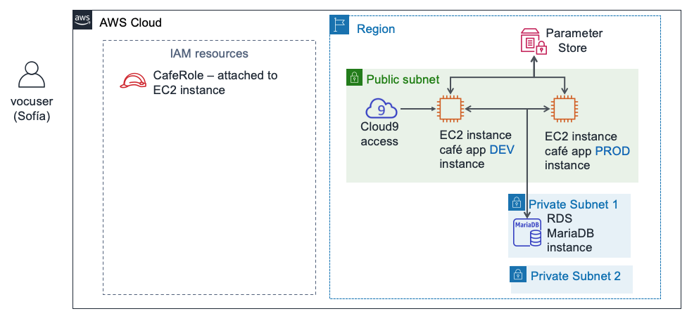

Laboratorio de desafíos del módulo 8: Control del acceso a cuentas de AWS mediante IAM
Caso
Después de hablar con Mateo sobre la infraestructura de AWS de la cafetería, Sofía se dio cuenta de que debía abordar algunos problemas de seguridad básicos respecto de la forma en que el personal de la cafetería ha estado utilizando la cuenta de AWS.
La cafetería ya es lo suficientemente grande como para que los miembros del equipo que crean, mantienen o acceden a las aplicaciones en AWS se especialicen en torno a roles (como desarrollador o administrador de base de datos). Hasta el momento, no se han esforzado en definir con claridad qué nivel de acceso debería tener cada usuario en función de sus roles y responsabilidades.
Sofía pasó cierto tiempo pensando en lo que cada persona debería poder hacer en la cuenta, especialmente con AWS Cloud9, Amazon Elastic Compute Cloud (Amazon EC2) y Amazon Relational Database Service (Amazon RDS). Tomó algunas decisiones y creó este gráfico, que describe cómo le gustaría definir los derechos de acceso en la cuenta de AWS:
| Grupo de IAM | Usuario de IAM | Acceso a los servicios de AWS | Motivo |
|---|---|---|---|
| AppDevelopers | Nikhil | Acceso de AWS Cloud9 al entorno de desarrollo de Amazon EC2. Además, acceso de solo lectura a Amazon EC2. | Nikhil suele trabajar como desarrollador de aplicaciones. Debe ser capaz de acceder al entorno de AWS Cloud9 correspondiente al entorno de desarrollo de la aplicación web de la cafetería. Sin embargo, no debería tener acceso al entorno de producción. También debe ser capaz de ver todos los recursos y los detalles de configuración de Amazon EC2, pero no debería contar con la capacidad de modificarlos. |
| DBAdministrators | Olivia | Acceso completo a Amazon RDS. Además, acceso completo a AWS Systems Manager. | Olivia fue contratada como administradora de base de datos para ayudar a administrar la base de datos que utiliza la aplicación web de la cafetería. Por lo tanto, debe tener todos los derechos de acceso a Amazon RDS. También necesitará acceso a AWS Systems Manager, donde se almacena la información de conexión a la base de datos. Sin embargo, además del acceso a estos dos servicios, Sofía no puede pensar en ninguna razón por la que Olivia necesite más acceso a recursos de AWS. |
Observe que, en lugar de asignar permisos directamente a los usuarios, Sofía decidió definir grupos de IAM. A continuación, asociará las políticas de IAM que otorgan acceso a esos grupos. Luego, planea asignar los usuarios a los grupos correspondientes. Si la cafetería contrata a más desarrolladores o administradores de bases de datos, puede agregarlos como nuevos usuarios a los grupos. Los nuevos usuarios heredarán los permisos correctos que correspondan a sus roles en el desarrollo y el mantenimiento de la infraestructura de cuentas de AWS. Este enfoque se ampliará a medida que la cafetería también lo haga.
Ahora que Sofía sabe qué derechos de acceso quiere asignar a cada usuario, está lista para comenzar.
Información general y objetivos del laboratorio
En este laboratorio, utilizará AWS Identity and Access Management (IAM) para definir diferentes derechos de acceso correspondientes a usuarios distintos. Deberá probar el acceso y ajustarlo. También observará cómo los derechos de acceso que concede afectan a cada acción que los usuarios de IAM pueden realizar en los recursos de la cuenta de AWS.
Después de completar este laboratorio, debería ser capaz de lo siguiente:
- crear usuarios y grupos de IAM, además de asociar las políticas de IAM a dichos grupos
- indicar cómo los derechos de acceso limitados afectan a los recursos a los que pueden acceder los usuarios de IAM y a las acciones que pueden realizar
- utilizar las políticas de IAM administradas por AWS para modificar los derechos de acceso de los usuarios y observar los resultados
- utilizar el simulador de políticas de IAM para observar el alcance del acceso otorgado por diferentes políticas
- acceder a Access Advisor de IAM para observar qué derechos de acceso aprovechan los diferentes usuarios
- crear políticas de IAM personalizadas con el editor visual
Cuando inicie el laboratorio, ya estarán creados los siguientes recursos en la cuenta de AWS:

Una vez que finalice este laboratorio, su arquitectura incluirá los siguientes recursos y configuraciones:

Duración
Para completar este laboratorio, se necesitan aproximadamente 80 minutos.
Restricciones de los servicios de AWS
En este entorno de laboratorio, el acceso a los servicios y las acciones de los servicios de AWS puede restringirse a los que se necesiten para cumplir las instrucciones del laboratorio. Es posible que se produzcan errores si intenta acceder a otros servicios o hacer acciones que no sean las que se describen en este laboratorio.
Acceso a la consola de administración de AWS
En la parte superior de estas instrucciones, elija Start Lab (Iniciar laboratorio) y comience a trabajar en él.
Se abrirá el panel Start Lab (Iniciar laboratorio), donde se muestra el estado del laboratorio.
Sugerencia:Si alguna vez necesita más tiempo para completar el laboratorio que el que se muestra en el temporizador, elija el botón Start Lab (Iniciar laboratorio) de nuevo para reiniciar el temporizador del entorno. Esta acción no eliminará los recursos que haya creado.
- Espere hasta que aparezca el mensaje Lab status: ready (Estado del laboratorio: listo) y, a continuación, haga clic en X para cerrar el panel Start Lab (Iniciar laboratorio).
En la parte superior de estas instrucciones, elija AWS.
Esto abrirá la consola de administración de AWS en una nueva pestaña del navegador y el sistema iniciará su sesión de forma automática.
Sugerencia: Si no se abre una nueva pestaña del navegador, por lo general habrá un aviso o un icono en la parte superior, el cual indicará que el navegador impide que el sitio abra ventanas emergentes. Haga clic en el aviso o el icono y elija Allow pop ups (Permitir ventanas emergentes).
Ubique la pestaña de la consola de administración de AWS de modo que aparezca junto con estas instrucciones. El método más óptimo sería tener ambas pestañas del navegador abiertas al mismo tiempo para que pueda seguir los pasos del laboratorio más fácilmente.
Nota: También puede desmarcar la casilla situada junto a “Terminal” en la parte superior de la pantalla para ocultarla.
Solicitud empresarial: configuración del acceso a cuentas de AWS para desarrolladores de aplicaciones (Desafío n.° 1)
La cafetería desea configurar permisos de acceso adecuados para los desarrolladores de aplicaciones. Usted asumirá el papel de Sofía para configurar el acceso. Luego, asumirá el papel de Nikhil y probará el acceso para desarrolladores de aplicaciones.
Tarea 1: Configurar un grupo de IAM con políticas y un usuario de IAM
En esta primera tarea en el laboratorio, trabajará como Sofía, la administradora de cuenta de AWS.
Como Sofía, creará un grupo de IAM y le asignará políticas administradas por AWS. A continuación, creará un nuevo usuario de IAM y lo agregará como miembro al grupo. Luego, creará un entorno de AWS Cloud9 en la instancia EC2 existente donde se ejecuta la versión de desarrollo de la aplicación web de la cafetería. Finalmente, compartirá el entorno de desarrollo con el nuevo usuario.
Nota: El usuario con el que inició sesión aparece en el área superior derecha de la página web. Actualmente, debería indicar que inició sesión como el usuario voclabs. En este laboratorio, suponga que el usuario voclabs corresponde a Sofía.
- En la consola, abra la página del servicio IAM.
Cree un grupo de IAM denominado
AppDevelopersy asóciele las siguientes políticas de IAM:AmazonEC2ReadOnlyAccess
AWSCloud9EnvironmentMember
Cree un usuario de IAM y agréguelo al grupo AppDevelopers.
- User name (Nombre de usuario):
Nikhil - Access Type (Tipo de acceso): AWS Management Console access (Acceso a la consola de administración de AWS)
- Custom password (Contraseña personalizada):
@ppD3veloper2020! - Require password reset (Requerir restablecimiento de contraseña): desmarque esta casilla
- Agregue a Nikhil al grupo AppDevelopers.
- Nota: No es necesario agregar etiquetas.
- En la pantalla Success (Correcto), puede elegir de forma opcional Download .cvs (Descargar .csv) y guardar el archivo en el equipo.
- Elija Close (Cerrar).
- User name (Nombre de usuario):
Mientras esté registrado como el usuario voclabs (Sofía), conéctese al IDE de AWS Cloud9 y configure la aplicación web de la cafetería.
Abra la página del servicio AWS Cloud9 y, en DEVCafeServer, elija Open IDE (Abrir IDE).
Ahora debería aparecer el IDE de AWS Cloud9 que se ejecuta en una instancia EC2.
En la ventana del terminal Bash, en la parte inferior de la pantalla, pegue y ejecute estos tres comandos:
wget https://aws-tc-largeobjects.s3-us-west-2.amazonaws.com/ILT-TF-200-ACACAD-20-EN/mod8-challenge/install-cafe-app.shchmod +x install-cafe-app.sh./install-cafe-app.shNota: No es necesario esperar a que el script termine de ejecutarse. Puede continuar con el siguiente paso.
Comparta el entorno de AWS Cloud9 con el usuario Nikhil.
En la esquina superior derecha del IDE de AWS Cloud9, elija Share (Compartir).
En el panel Share this environment (Compartir este entorno), en Invite Members (Invitar miembros), escriba
Nikhily elija Invite (Invitar).Elija OK (Aceptar), vuelva a elegir OK (Aceptar) y, a continuación, Done (Listo).
Importante: Cierre la pestaña del navegador correspondiente al IDE de AWS Cloud9, pero deje abierta al menos otra pestaña del navegador donde haya iniciado sesión en la consola de administración de AWS como el usuario voclabs (Sofía).
Tarea 2: Iniciar sesión como Nikhil y probar el acceso
En esta tarea, trabajará como Nikhil para probar los permisos de acceso que configuró Sofía.
Sugerencia: Recomendamos abrir una pestaña del navegador de incógnito o privada para iniciar sesión como Nikhil.
- Por ejemplo, si utiliza Chrome, elija File (Archivo) > New Incognito Window (Nueva ventana de incógnito). Si está usando Firefox, elija File (Archivo) > New Private Window (Nueva ventana privada).
- También puede usar otro navegador (por ejemplo, si usó Chrome para completar la tarea 1, use Firefox, Edge o Safari para la tarea 2).
Nota: Utilizar una sesión de incógnito, una sesión privada o un navegador diferente resulta conveniente. Puede mantener sus sesiones como el usuario voclabs y otro usuario (por ejemplo, Nikhil) abiertas simultáneamente. Por lo tanto, puede cambiar entre estos dos niveles de acceso de usuario sin necesidad de cerrar sesión o iniciar sesión repetidas veces. La información de sesión autenticada en las diferentes pestañas del navegador se aislará entre sesiones.
Como Nikhil, inicie sesión en la consola de administración de AWS.
En la pestaña del navegador donde inició sesión como el usuario voclabs (Sofía), abra la consola de IAM, elija Users (Usuarios) y, a continuación, elija Nikhil.
Elija la pestaña Security credentials (Credenciales de seguridad) y, en la sección Sign-in credentials (Credenciales de inicio de sesión), copie el enlace de inicio de sesión de la consola.
Pegue el enlace en una pestaña del navegador de incógnito o privada (u otro navegador como se explicó en la sugerencia anterior).
En la pantalla Sign in as IAM user (Iniciar sesión como usuario de IAM), escriba las credenciales de Nikhil y elija Sign in (Iniciar sesión).
- IAM user name (Nombre de usuario de IAM):
Nikhil - Password (Contraseña):
@ppD3veloper2020!
- IAM user name (Nombre de usuario de IAM):
Abra la consola de Amazon EC2 y, en una pestaña del navegador, cargue la aplicación web de la cafetería.
Verifique que se encuentra en la región correcta (por ejemplo, Norte de Virginia) y cambie por dicha región, si es necesario.
Debería ser capaz de ver todos los detalles de las instancias EC2.
Busque y copie la dirección IP pública IPv4 de la instancia aws-cloud9-DEVCafeServer.
En una nueva pestaña del navegador, cargue
http://<dev-public-ip-address>/cafe, donde <dev-public-ip-address> es la dirección IP que copió.Debería aparecer el sitio web de la cafetería. Mantenga esta pestaña del navegador abierta para una sección posterior del laboratorio.
Pruebe más su acceso a Amazon EC2 intentando reiniciar el servidor web.
Intente reiniciar la instancia aws-cloud9-DEVCafeServer.
Sugerencia: Para encontrar la opción Reboot (Reiniciar), seleccione la instancia y busque en el menú Actions (Acciones).
Respuesta a preguntas sobre el acceso a Amazon EC2 de Nikhil
Las respuestas se comprobarán cuando haga clic el botón azul Submit (Enviar) al final del laboratorio.
Acceda a las preguntas de este laboratorio.
Arriba de estas instrucciones, elija el menú Details (Detalles) y, a continuación, Show (Mostrar).
Elija el enlace Access the multiple choice questions (Acceder a las preguntas de opción múltiple) que aparece en la parte inferior de la página.
Las preguntas deberían cargarse en una nueva pestaña del navegador.
En la página web que acaba de abrir, responda las dos primeras preguntas:
Pregunta 1: ¿Qué sucedió cuando Nikhil intentó reiniciar la instancia EC2?
Pregunta 2: ¿Qué política de IAM permitió a Nikhil acceder al entorno de AWS Cloud9?
Nota: Deje abierta la página web con las preguntas en la pestaña de su navegador. Volverá a ella más adelante en este laboratorio.
Acceso al servidor de desarrollo como Nikhil
Vuelva a la pestaña del navegador donde inició sesión en la consola de administración de AWS como Nikhil.
Sugerencia: Recuerde que puede ver qué usuario está utilizando en la parte superior derecha de la interfaz del navegador.
Vaya a la consola de AWS Cloud9 y conéctese al IDE de AWS Cloud9 en la instancia EC2 DEVCafeServer.
En el menú Services (Servicios), elija AWS Cloud9.
A la izquierda, expanda el menú seleccionando (ícono de menú), elija Shared with you (Compartido con usted) y compruebe que el entorno de DEVCafeServer esté disponible.
Elija Open IDE (Abrir IDE).
Nota: Acaba de conectarse al sistema operativo invitado correspondiente a la instancia EC2 aws-cloud9-DEVCafeServer. Observó esta instancia en la consola de Amazon EC2 hace un momento. Puede utilizar el IDE para examinar y editar archivos en el servidor web. También proporciona un terminal Bash que se ejecuta en la instancia.
En la instancia de desarrollo del sitio web de la cafetería, modifique el encabezado principal de la página web.
- Abra la página web principal en el editor dirigiéndose al navegador de archivos, buscando el directorio
DEVCafeServer/www/html/cafey haciendo doble clic en index.php. - Modifique la línea 13 de modo que enuncie lo siguiente:
<div class="center">Café DEV Site</div>Para guardar el cambio, elija File (Archivo) > Save (Guardar) y, en el navegador, actualice la página web
http://dev-public-ip-address/cafe/.Tenga en cuenta que, mientras actuaba como Nikhil, cambió el encabezado principal de la página web en el entorno de desarrollo.
- Abra la página web principal en el editor dirigiéndose al navegador de archivos, buscando el directorio
Pruebe la conectividad de la base de datos de la aplicación web.
- En el sitio web de la cafetería, elija Menu (Menú).
- ¿Qué mensaje aparece?
Regrese a la pestaña del navegador con las preguntas de opción múltiple correspondientes a este laboratorio y responda la siguiente pregunta.
Pregunta 3: ¿Qué mensaje se mostró en la página Menu (Menú) de la instancia de desarrollo del sitio web de la cafetería?
Nikhil recuerda que los parámetros de conexión de la base de datos se guardaron en AWS Systems Manager Parameter Store.
Como Nikhil, abra Systems Manager Parameter Store.
- En la consola, abra el servicio Systems Manager.
- En el menú de la izquierda, elija Application Management (Administración de aplicaciones) > Parameter Store.
- ¿Qué mensaje aparece?
Regrese a la pestaña del navegador con las preguntas de opción múltiple correspondientes a este laboratorio y responda la siguiente pregunta.
- Pregunta 4: ¿Qué mensaje apareció cuando Nikhil abrió la página de Systems Manager Parameter Store en la consola?
Nikhil alerta a Sofía sobre el problema en el servidor de desarrollo que le impide mejorar la aplicación web de la cafetería. Sofía está preocupada. Le pide a Nikhil que compruebe si la versión de producción del sitio web presenta el mismo problema.
Como Nikhil, verifique que la aplicación web de la cafetería correspondiente a producción esté funcionando correctamente.
- Abra la consola de Amazon EC2 y copie la dirección IP pública IPv4 de la instancia PRODCafeServer.
- En una nueva ventana del navegador, cargue
http://prod-public-ip-address/cafe/menu.php. - ¿Aparece correctamente la página web y puede realizar pedidos en ella?
Nuevo requisito empresarial: configuración del acceso a cuentas de AWS para administradores de bases de datos (Desafío n.° 2)
Nikhil informa los resultados de su prueba a Sofía. Ella se alegra de saber que el sitio de producción sigue funcionando bien. Sin embargo, quiere corregir el problema en el sitio de desarrollo.
Decide que le pedirá a Olivia que solucione el problema. Sin embargo, debe definir primero los derechos de acceso a la cuenta de AWS para los administradores de bases de datos. Luego, debe crear un recurso de usuario de IAM para que Olivia pueda iniciar sesión en la cuenta.
Tarea 3: Configurar IAM para permitir el acceso de usuarios administradores de bases de datos
En esta tarea, trabajará como Sofía para habilitar el acceso a AWS de Olivia.
Regrese al navegador donde inició sesión como el usuario voclabs (Sofía) y cree un grupo de IAM denominado
DBAdministratorscon los siguientes permisos:- AmazonRDSReadOnlyAccess
- AmazonSSMFullAccess
Nota: En un caso real, Sofía tendría que conceder más que simplemente acceso de solo lectura a RDS a sus administradores de bases de datos. Sin embargo, los permisos en este entorno de laboratorio no permiten asociar la política AmazonRDSFullAccess. En su lugar, para este laboratorio, debe usar la política AmazonRDSReadOnlyAccess como sustituto.
Cree un usuario de IAM llamado
Oliviacon acceso a la consola de administración de AWS.- Establezca una contraseña personalizada:
Db@dministrat0r2020!. - Desactive el requisito de restablecer la contraseña.
- Establezca una contraseña personalizada:
- Agregue a Olivia al grupo DBAdministrators.
Tarea 4: Iniciar sesión como administrador de base de datos y resolver el problema de conectividad de la base de datos
En esta tarea, trabajará como Olivia para resolver el problema de la base de datos que Nikhil identificó. También trabajará como Sofía para ayudar a Olivia a resolver algunos problemas.
Como Olivia, inicie sesión en la consola de administración de AWS.
Sugerencia: Utilice la sesión de incógnito, la sesión privada o el otro tipo de navegador que usó para iniciar sesión como Nikhil. Siga las siguientes instrucciones:
Elija Nikhil @ <account-number> en la parte superior derecha de la consola y elija Sign Out (Cerrar sesión).
Luego, elija Log back in (Iniciar sesión de nuevo).
Debe aparecer la pantalla Sign in as IAM user (Iniciar sesión como usuario de IAM) con el ID de cuenta ya ingresado.
Nota: Si la pantalla de inicio de sesión no muestra el ID de cuenta, vuelva a la pestaña del navegador donde todavía tiene la sesión abierta del usuario voclabs (Sofía). En la consola de IAM, elija Users (Usuarios) y Olivia. Elija la pestaña Security credentials (Credenciales de seguridad). En la sección Sign-in credentials (Credenciales de inicio de sesión), copie el enlace de inicio de sesión de la consola.
Inicie sesión con las credenciales de Olivia:
- IAM user name (Nombre de usuario de IAM):
Olivia - Password (Contraseña):
Db@dministrat0r2020!
- IAM user name (Nombre de usuario de IAM):
Verifique que la base de datos de RDS se esté ejecutando.
- Abra la página del servicio Amazon RDS y elija Databases (Bases de datos).
- Verifique que el estado de la instancia de base de datos sea Available (Disponible).
Olivia observa que la base de datos se está ejecutando.
Recuerda que el entorno de desarrollo se conecta a la base de datos mediante parámetros almacenados en Systems Manager Parameter Store. Olivia se pregunta si la instancia EC2 DEVCafeServer tiene los permisos necesarios para leer los parámetros en Parameter Store.
- Abra la consola de Amazon EC2 y elija Running Instances (Instancias en ejecución).
Regrese a la pestaña del navegador con las preguntas de opción múltiple correspondientes a este laboratorio y responda la siguiente pregunta.
- Pregunta 5: ¿Por qué no puede Olivia acceder a los detalles de la instancia EC2?
Olivia explica a Sofía que no puede acceder a las instancias EC2 y Sofía vuelve a la consola para solucionar este problema.
Ahora, trabajará como Sofía para revisar y actualizar el acceso de Olivia a los recursos de AWS.
- Vuelva a la pestaña del navegador donde inició sesión como el usuario voclabs (Sofía).
Abra el grupo DBAdministrators y asocie estas políticas:
- AmazonEC2ReadOnlyAccess
- IAMReadOnlyAccess
Nota: Sofía se da cuenta de que Olivia necesitará algunos permisos de IAM si tiene que acceder a los detalles del rol de IAM que está asociado a la instancia EC2.
Aún como el usuario voclabs (Sofía), compruebe qué servicios y características utilizó Olivia.
En la consola de IAM, abra la usuaria Olivia y elija la pestaña Access Advisor.
Tenga en cuenta que puede ver qué áreas de servicio visitó Olivia. La actividad reciente del servicio suele aparecer en un plazo de 4 horas (como se indica en los detalles de Access Advisor). Es posible que aún no vea ningún dato del último acceso correspondiente a Olivia.
Puede utilizar esta vista para obtener información acerca de cómo los permisos de un usuario tal vez sean más abiertos de lo que deberían ser. Esta información le permite alinear más estrechamente los derechos de acceso con el principio de privilegio mínimo.
Sofía le pide a Olivia que compruebe su acceso a Amazon EC2.
Como Olivia, vuelva a la pestaña del navegador donde la usuaria Olivia inició sesión y actualice la página de instancias de la consola de Amazon EC2.
- Olivia ahora debería ser capaz de acceder a ambas instancias EC2 en ejecución.
- Seleccione la instancia aws-cloud9-DEVCafeServer.
- En la pestaña Description (Descripción), busque el rol de IAM y elija CafeRole.
- En la pestaña Permissions (Permisos), expanda la política AmazonSSMManagedInstanceCore y elija la opción de visualización JSON.
- Revise los permisos de la política.
Regrese a la pestaña del navegador con las preguntas de opción múltiple que corresponden a este laboratorio y responda la siguiente pregunta.
- Pregunta 6: Nombre dos acciones específicas en la política que permitan a la aplicación web de la cafetería en esta instancia acceder a las credenciales de la base de datos en Parameter Store.
Olivia ahora está convencida de que la aplicación web en la instancia EC2 de desarrollo puede acceder a Parameter Store. Tal vez el problema sea otra cosa. Olivia analiza el tema con Sofía.
Después de una conversación, Sofía recuerda que el entorno de desarrollo usaba anteriormente una base de datos local, pero que ahora emplea Amazon RDS. La base de datos local tenía un nombre de usuario diferente que permitía a la aplicación web conectarse a la base de datos. La conexión con la base de datos en Amazon RDS requiere un nombre de usuario de base de datos diferente. ¡Ese debe ser el problema!
Sofía pide a Olivia que compruebe si el nombre de usuario de la base de datos es el origen del problema y que lo actualice.
- Como Olivia, actualice el valor dbUser (Usuario de base de datos) en Systems Manager Parameter Store.
En la aplicación web del servidor de la cafetería de desarrollo, actualice la página Menu (Menú).
- Si esta página web aún no está abierta, cargue
http://<dev-public-ip-address>/cafe/menu.phpen un navegador (donde <dev-public-ip-address> es la dirección IP pública IPv4 real de la instancia aws-cloud9-DEVCafeServer). - ¿Aparece ahora correctamente la página con todo el contenido? ¿Puede enviar un pedido sin problemas?
¡Felicitaciones! Actuó como miembro del grupo DBAdministrators y corrigió el problema en el sitio web. Nikhil agradece a Olivia por resolver el problema, y Olivia también informa a Sofía que el problema está resuelto.
- Si esta página web aún no está abierta, cargue
Nuevo requisito empresarial: mejora del acceso de los usuarios de IAM (Desafío n.° 3)
Frank y Martha están contentos de que Sofía y el equipo mejoraron la seguridad de la cuenta de AWS. Por otra parte, Sofía se alegra de haber podido configurar diferentes permisos para sus desarrolladores de aplicaciones y administradores de bases de datos. Le gusta que asignar permisos independientes a cada rol resulte en que los miembros del equipo trabajen juntos, cada uno dentro de su área de competencia principal y responsabilidad asignada, para potenciar el desarrollo y solucionar problemas.
Sofía se toma un minuto para relajarse con sus amigos. Sin embargo, ya está pensando en personalizar aún más la configuración de seguridad que asignó a los diferentes usuarios. Algunos de los permisos todavía están demasiado abiertos y no siguen completamente el principio de privilegio mínimo. En este último desafío del laboratorio, asumirá el papel de Sofía. Trabajará para definir una política de IAM personalizada que reduzca la cantidad de acciones de IAM que se conceden a los miembros del grupo de administradores de bases de datos. Sin embargo, también tendrá que concederles suficiente acceso de IAM para que cumplan sus responsabilidades laborales.
Tarea 5: Usar el simulador de políticas de IAM y crear una política de IAM personalizada con el editor visual
Vuelva a la ventana del navegador donde inició sesión como el usuario voclabs (Sofía) y cargue esta URL en una nueva pestaña del navegador: https://policysim.aws.amazon.com/
Debería abrirse la página del simulador de políticas de IAM.
- Elija a la usuaria Olivia.
- En la lista IAM Policies (Políticas de IAM), asegúrese de que la política IAMReadOnlyAccess esté seleccionada. No obstante, desmarque las casillas de verificación de las demás políticas.
- En la sección Policy Simulator (Simulador de políticas), elija Select service (Seleccionar servicio). En el cuadro de búsqueda Filter (Filtrar), escriba
Identy seleccione Identity and Access Management.
Elija la opción Select All (Seleccionar todo) (a la derecha del menú Select actions [Seleccionar acciones]) y, a continuación, elija Run Simulation (Ejecutar simulación).
- En el panel Configuración y resultados de acción, debe mostrarse una lista de acciones.
- La columna Permission (Permiso) muestra los permisos de Olivia para cada acción. La política IAMReadOnlyAccess deniega a Olivia los permisos necesarios para realizar acciones Add (Agregar) o Create (Crear). No obstante, desplácese para encontrar las acciones que sí puede realizar.
- El resumen (en la parte superior de la lista) muestra que Olivia tiene permitido actualmente realizar 57 acciones de IAM.

Sofía recuerda la única razón por la que concedió a Olivia los permisos de la política IAMReadOnlyAccess. Quería concederle los permisos necesarios para observar los detalles de ciertas políticas. Estas políticas se han asociado al rol de IAM que está asociado a las dos instancias del servidor de la cafetería. Sofía decide crear una nueva política de IAM más restrictiva para los miembros del grupo DBAdministrators.
En los siguientes pasos, trabajará como Sofía para crear esta nueva política.
- Vuelva a la pestaña del navegador donde inició sesión como el usuario voclabs (Sofía).
- En la consola de IAM, elija Policies (Políticas) y, a continuación, Create policy (Crear política).
En la pestaña Visual editor (Editor visual), configure los siguientes parámetros.
Haga clic en Choose a service (Elegir un servicio). Busque EC2 y elíjalo.
- En el cuadro de búsqueda Actions (Acciones), busque IAM y seleccione DescribeIamInstanceProfileAssociations.

En la parte inferior de la pantalla, seleccione Add additional permissions (Agregar permisos adicionales).
Haga clic en Choose a service (Elegir un servicio). Busque IAM y elíjalo.
En el cuadro de búsqueda Actions (Acciones), busque Get (Obtener) y seleccione las siguientes acciones:
- GetPolicyVersion
- GetRole
- GetRolePolicy
Regrese al cuadro de búsqueda, busque List (Ubicar en lista) y seleccione las siguientes acciones:
- ListAttachedRolePolicies
- ListInstanceProfiles
- ListInstanceProfilesForRole
- ListPolicies
- ListRolePolicies
- ListRoles
Expanda la sección Resources (Recursos) y, para los tres tipos de recursos (instance-profile, policy y role), seleccione Any in this account (Cualquiera en esta cuenta).
En la parte superior de la pantalla, elija la pestaña JSON.
Verá el documento JSON que acaba de componer con el editor visual.
Verifique que los detalles del documento de política coincidan con lo que se muestra en el siguiente ejemplo:

Desafortunadamente, en este entorno de laboratorio, no podemos concederle los permisos necesarios para crear una política de IAM. Obtendrá un error de permisos si elige Review policy (Revisar política), asigna un nombre a la política y, a continuación, elige Create policy (Crear política).
Sin embargo, al iniciar este laboratorio, se creó una política que coincide exactamente con la política de ejemplo, y usted ya adquirió experiencia en el uso del editor visual. También experimentó cómo brinda una forma de crear políticas detalladas sin necesidad de crear un documento de política JSON desde cero.
- Salga del asistente Create policy (Crear política) seleccionando Cancel (Cancelar).
En el cuadro de búsqueda Policies (Políticas), busque
LimitedIamPolicy.Observe que los detalles de la política coincidan con la que estuvo creando, como se muestra en la captura de pantalla anterior.
Nota: Los elementos Sid de una política son opcionales. Además, el orden en que aparecen Effect (Efecto), Action (Acción) y Resource (Recurso) en un documento de política no afecta su funcionamiento.
Edite el grupo de IAM DBAdministrators.
- Asocie la política LimitedIamPolicy.
- Desconecte la política IAMReadOnlyAccess.
Sofía pide a Olivia que confirme que todavía puede acceder a los detalles del rol de IAM CafeRole, incluso con los derechos de acceso de IAM más limitados que ahora se le conceden.
Vuelva a la pestaña del navegador donde tiene la sesión abierta de Olivia y verifique que todavía puede acceder a los detalles de CafeRole.
- En la consola de Amazon EC2, seleccione la instancia aws-cloud9-DEVCafeServer.
- En la pestaña Description (Descripción), elija IAM role (Rol de IAM) > CafeRole.
- Expanda la política AmazonSSMManagedInstanceCore y compruebe que todavía puede ver los detalles del documento JSON.
(Opcional) Vuelva a la pestaña del navegador con IAM Policy Simulator (Simulador de políticas de IAM) donde tiene la sesión abierta del usuario voclabs (Sofía). Ejecute la simulación de nuevo (para las acciones de IAM que puede realizar Olivia).
- Sugerencia: Para mostrar las nuevas políticas de IAM que corresponden a Olivia, actualice la página del navegador.
- Antes del cambio en el grupo de IAM DBAdministrators, Olivia tenía permitido realizar 57 acciones relacionadas con el servicio IAM. Sin embargo, después del cambio, su acceso al servicio IAM es mucho más limitado.
- La nueva política concede menos permisos de IAM. Sin embargo, Olivia todavía cuenta con la capacidad de acceso que necesita para desempeñar sus funciones laborales.
Noticias de la cafetería

Sofía cree que se está volviendo buena para administrar el acceso de los usuarios a la cuenta de AWS.
Sabe cómo utilizar las políticas de IAM administradas por AWS para controlar el acceso y también cómo emplear el simulador de políticas de IAM para observar el alcance de los permisos que otorgan las diferentes políticas. Conoce cómo acceder al IAM Access Analyzer para reconocer qué derechos de acceso están aprovechando los diferentes usuarios. Por último, también practicó el uso del editor visual de políticas de IAM para crear políticas de IAM personalizadas.
Envío del trabajo
- En la parte superior de estas instrucciones, elija Submit (Enviar) para registrar su progreso y, cuando se le indique, elija Yes (Sí).
Si los resultados no se muestran después de algunos minutos, vuelva a la parte superior de estas instrucciones y elija Grades (Resultados).
Sugerencia: Puede enviar su trabajo varias veces. Después de realizar las modificaciones pertinentes, vuelva a elegir Submit (Enviar). Su último envío es el que se registrará para este laboratorio.
- Para encontrar comentarios detallados sobre su trabajo, elija Details (Detalles) seguido de View Submission Report (Ver informe de envío).
Fin del laboratorio
¡Felicitaciones! Ha completado el laboratorio.
Para confirmar que desea finalizar el laboratorio, haga clic en End Lab (Finalizar laboratorio), en la parte superior de esta página y, a continuación, elija Yes (Sí).
Debería aparecer un panel con el siguiente mensaje: DELETE has been initiated… You may close this message box now (Se ha iniciado la ELIMINACIÓN… Ya puede cerrar este cuadro de mensaje).
- Para cerrar el panel, haga clic en la X de la esquina superior derecha.
© 2020 Amazon Web Services, Inc. y sus empresas afiliadas. Todos los derechos reservados. Este contenido no puede reproducirse ni redistribuirse, total ni parcialmente, sin el permiso previo por escrito de Amazon Web Services, Inc. Queda prohibida la copia, el préstamo y la venta de carácter comercial.